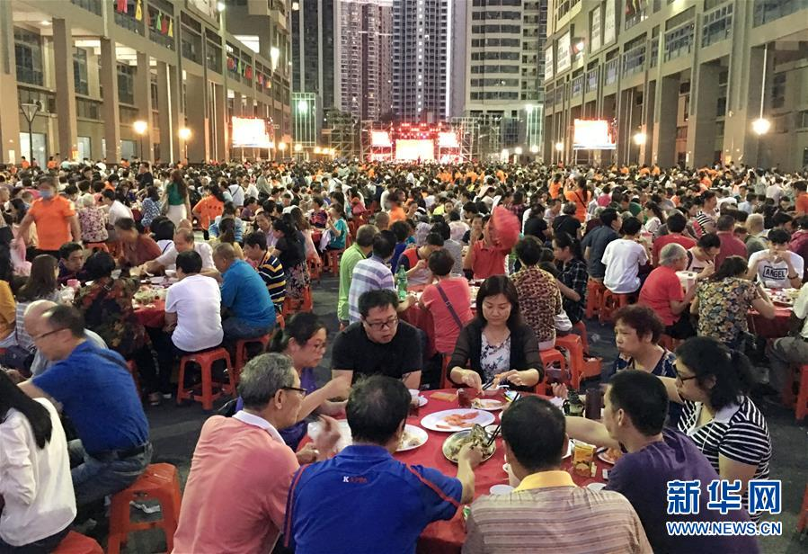

鄭號錫（韓語：정호석 Jeong Ho Seok，1994年2月18日－），
藝名 j-hope（韓語：제이홉；日語：ジェイホープ）。
韓國男藝人，為韓國男子團體防彈少年團的團員，在團內擔任副Rapper (Sub Rapper)、主領舞、舞蹈隊長，
為第三位入選防彈少年團的團員。2013年6月13日，透過單曲專輯《2 COOL 4 SKOOL》出道。
2014年6月4日，透過日語單曲《No More Dream -Japanese Ver.-》在日本出道。
2018年3月2日，推出首張mixtape《Hope World》。
金南俊（韓語：김남준 Kim Nam Jun，1994年9月12日－），
藝名RM（韓語：알엠；日語：アールエム）。韓國男藝人，
為韓國男子團體防彈少年團的隊長，在團內擔任主Rapper、製作人，為第一位入選防彈少年團的成員。
2013年6月13日，透過單曲專輯《2 COOL 4 SKOOL》出道。2014年6月4日，透過日語單曲《No More Dream -Japanese Ver.-》在日本出道。
2008年曾以「Runch Randa」的名義發表Mixtape，出道後則於2015年3月20日，以藝名「RM」推出首張同名Mixtape《RM》。
IQ 148，中學二年級時曾靠自學獲得多益850分（第二次則是900分），也以自學形式進修英語和日語，而被稱為「腦性男」。
2017年11月13日，Big Hit娛樂官方公告藝名由「Rap Monster」更換成「RM」。
理由在於隨著防彈少年團出道時間越長，音樂風格也越來越多樣化。
他未來也將會做出更加多元的音樂，不僅限於「Rap」，所以決定更改藝名。
連到下一頁